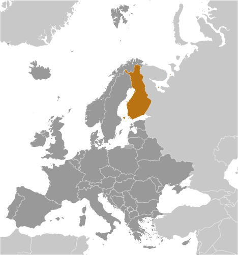
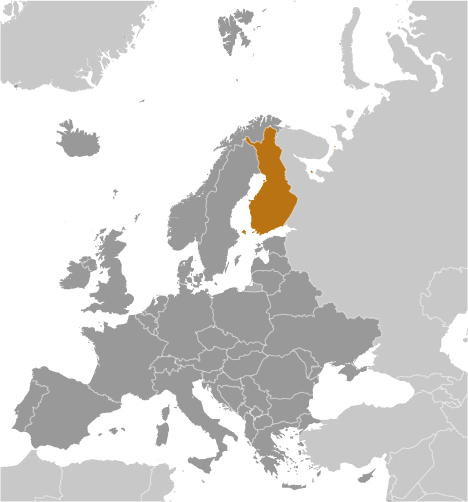

Economy - overview
Finland has a highly industrialized, largely free-market economy with per capita GDP
almost as high as that of Austria and the Netherlands and slightly above that of Germany
and Belgium. Trade is important, with exports accounting for over one-third of GDP
in recent years. The government is open to, and actively takes steps to attract, foreign
direct investment. Finland is historically competitive in manufacturing, particularly
in the wood, metals, engineering, telecommunications, and electronics industries.
Finland excels in export of technology as well as promotion of startups in the information
and communications technology, gaming, cleantech, and biotechnology sectors. Except
for timber and several minerals, Finland depends on imports of raw materials, energy,
and some components for manufactured goods. Because of the cold climate, agricultural
development is limited to maintaining self-sufficiency in basic products. Forestry,
an important export industry, provides a secondary occupation for the rural population.
Finland had been one of the best performing economies within the EU before 2009 and
its banks and financial markets avoided the worst of global financial crisis. However,
the world slowdown hit exports and domestic demand hard in that year, causing Finland’s
economy to contract from 2012 to 2014. The recession affected general government finances
and the debt ratio. The economy returned to growth in 2016, posting a 1.9% GDP increase
before growing an estimated 3.3% in 2017, supported by a strong increase in investment,
private consumption, and net exports. Finnish economists expect GDP to grow a rate
of 2-3% in the next few years. Finland's main challenges will be reducing high labor
costs and boosting demand for its exports. In June 2016, the government enacted a
Competitiveness Pact aimed at reducing labor costs, increasing hours worked, and introducing
more flexibility into the wage bargaining system. As a result, wage growth was nearly
flat in 2017. The Government was also seeking to reform the health care system and
social services. In the long term, Finland must address a rapidly aging population
and decreasing productivity in traditional industries that threaten competitiveness,
fiscal sustainability, and economic growth.
GDP (purchasing power parity)
- $244.9 billion (2017 est.)
- $238.2 billion (2016 est.)
- $232.4 billion (2015 est.)
- note: data are in 2017 dollars
- country comparison to the world: 62
GDP (official exchange rate)
$252.8 billion (2017 est.)
GDP - real growth rate
- 2.8% (2017 est.)
- 2.5% (2016 est.)
- 0.1% (2015 est.)
- country comparison to the world: 122
GDP - per capita (PPP)
- $44,500 (2017 est.)
- $43,400 (2016 est.)
- $42,500 (2015 est.)
- note: data are in 2017 dollars
- country comparison to the world: 38
Gross national saving
- 23.3% of GDP (2017 est.)
- 21.7% of GDP (2016 est.)
- 20% of GDP (2015 est.)
- country comparison to the world: 73
GDP - composition, by end use
- household consumption: 54.4% (2017 est.)
- government consumption: 22.9% (2017 est.)
- investment in fixed capital: 22.1% (2017 est.)
- investment in inventories: 0.4% (2017 est.)
- exports of goods and services: 38.5% (2017 est.)
- imports of goods and services: -38.2% (2017 est.)
GDP - composition, by sector of origin
- agriculture: 2.7% (2017 est.)
- industry: 28.2% (2017 est.)
- services: 69.1% (2017 est.)
Agriculture - products
barley, wheat, sugar beets, potatoes; dairy cattle; fish
Industries
metals and metal products, electronics, machinery and scientific instruments, shipbuilding,
pulp and paper, foodstuffs, chemicals, textiles, clothing

 
